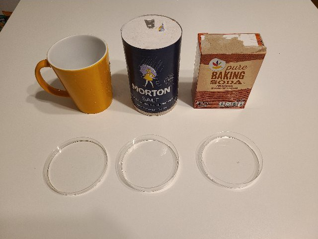
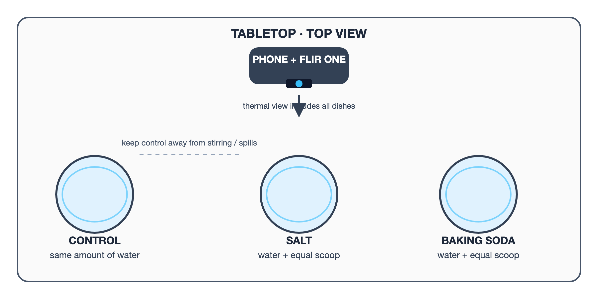
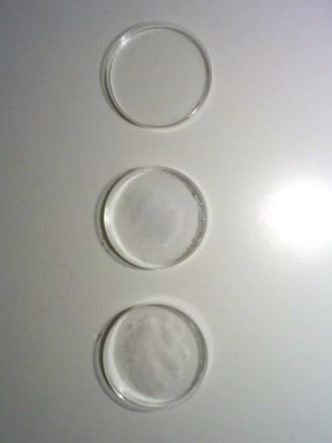
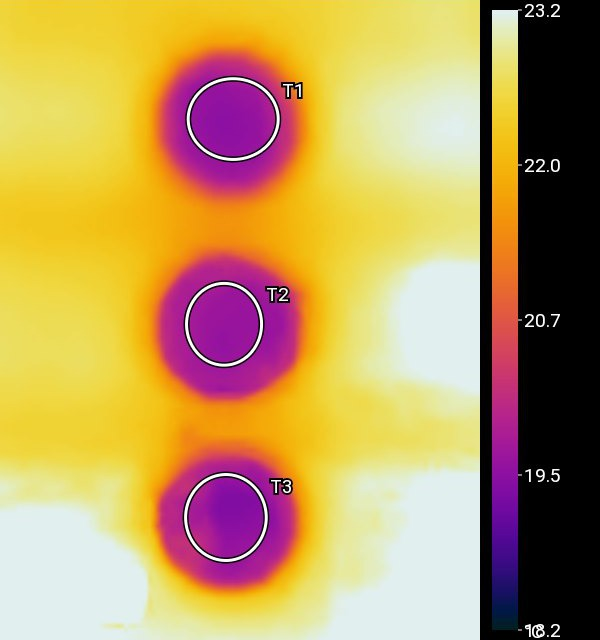
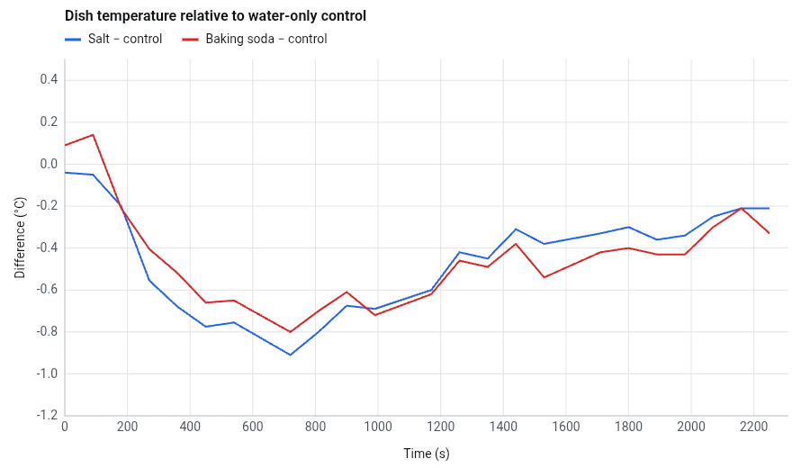
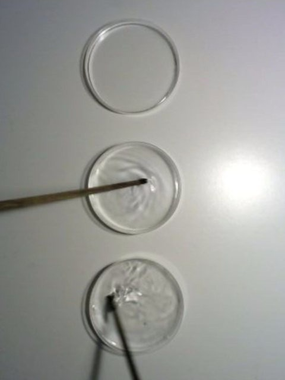
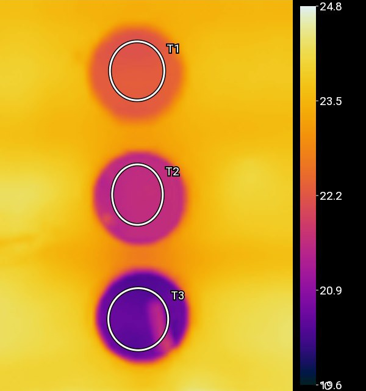
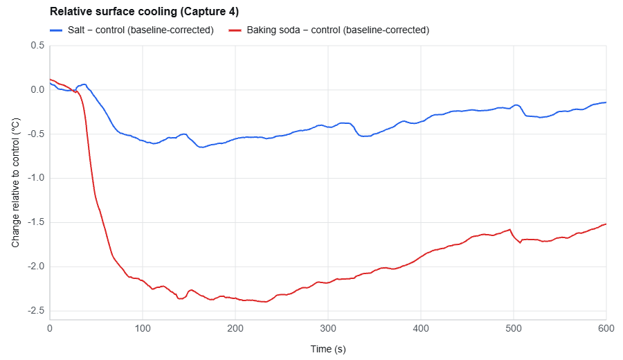

Can AI design a chemistry experiment from a photo of materials?
We photographed salt and baking soda, asked AI what experiment we could do, and then did what it said.
Every lab manual starts with a procedure. Someone has already decided what to mix and what to measure, and the student follows along. Looking at a few ordinary things and asking “what could I find out with these?” is the part students rarely get to practice. So we put several items on a table, took a photo, and gave it to the AI assistant built into Infrared Explorer.
The photo and the ask

Our question, word for word:
What experiment can I do using these materials?
“Your photo shows a mug, salt, baking soda, and three matching shallow dishes—good materials for a dissolving-and-cooling comparison,” it answered. It found a job for everything, even the mug: “The mug can help pour the water.” It offered one experiment: plain water in one dish, water plus a level teaspoon of salt in the next, water plus a level teaspoon of baking soda in the third, each powder stirred for 10 seconds, all three filmed from above (Figure 2). It predicted that the salt water would cool by “roughly a few tenths of a degree” and the baking soda water by “perhaps around 0.5–1.5 °C.”

The first run: a tie
The three Petri dishes sat in a column on a table, plain water at the top, salt/water in the middle, baking soda/water at the bottom, each with the same amount of room-temperature water. A FLIR Edge Pro looked straight down, and Infrared Explorer recorded one frame every 3 seconds for 38.5 minutes. Between 90 and 105 seconds we tipped in a level scoop of each powder. The plan said to stir. We did not.


Figure 3: The first run 105 s in, seen in visible light (left) and infrared light (right). Top to bottom: plain water, salt/water, baking soda/water. The baking soda is still a white pile on the bottom of its dish.
All three water surfaces started at about 19.8 °C. Between 5 and 15 minutes the salt dish read about 0.8 °C below the control and the baking soda dish about 0.7 °C below (Figure 4). Then both crept back to about 0.2 °C below. The baking soda/water dish did not cool more than the salt/water dish.

Asking the AI why
We gave the AI the recording. It found the additions in the frames by itself, wrote code to read the median temperature in each dish's reading area, and left out frames near the camera's automatic recalibrations, which make every reading jump at once. It assumed we had stirred, and treated the untouched control as a flaw. We set it straight: “The volume is equal, and I didn't stir them.” “Thanks for clarifying—I misread the setup,” it replied. Then we asked:
Why there is no difference between salt and baking soda
It corrected the question before answering it: “There is a small difference in your capture: the salt dish read slightly cooler than the baking-soda dish during much of the period when both were coolest—only about a tenth or two of a degree, though.” It listed possible reasons for the tie: equal scoops are not equal moles, unstirred powders may dissolve at different rates, and the camera reads only the surface. All true. But it had looked at the frame in Figure 3 and never mentioned the pile. Asked how to make the difference bigger, it suggested weighing the powders (8 g of each in 100 mL of water) and stirring each dish “the same way for the same time.”
The second run: stirred
We set up the same three dishes and recorded one frame per second for 10 minutes. The powders went in at about 35 seconds, and this time we stirred both powder dishes with wooden sticks, still going at 120 seconds. The control was left alone.


Figure 5: The second run 120 s in, seen in visible light (left) and infrared light (right). The baking soda dish at the bottom is now clearly the coldest; the warm streak inside it is the stirring stick.
The baking soda dish started about 0.5 °C warmer than the control, so the AI measured each dish from its own first 30 seconds. Within a minute of the addition, baking soda was 2.1 °C colder than the control, bottoming out at about 2.4 °C three to four minutes in. Salt never got more than about 0.6 °C below (Figure 6).

What the AI got right: it found the addition times without being told, corrected for different starting temperatures, and would not accept our claim of “no difference” in the first run. What it got wrong: minutes after writing “The visible frames show stirrers in both treated dishes beginning around 40 seconds,” it wrote a report saying “neither dish was stirred.” It had carried our correction about the first run into the second. What it hedged on: “one run can’t establish a repeatable difference.”
The science
Dissolving a crystal is a tug of war. Pulling ions out of the solid costs energy; water molecules pay some of it back as they crowd around each freed ion. For table salt the cost wins by about 3.9 kJ per mole (58 g), for baking soda by about 18.7 kJ per mole (84 g). Gram for gram, baking soda takes more than three times as much heat from the water. Both dissolve anyway because scattered ions are far more disordered than ions locked in a crystal. Entropy foots the bill, as it does when a released rubber band cools.
That appetite for heat only counts if the powder dissolves. Salt is very soluble (about 36 g per 100 g of water) and vanishes within seconds even unstirred, which is why the salt dish in Figure 3 is cloudy, not heaped. Baking soda dissolves slowly, and only about 10 g fits in 100 g of water. A level teaspoon (about 4.6 g) in 45 g of water is right at that limit. Left alone, the pile sat on the bottom in a thin layer of nearly saturated water, cooling only its surroundings. Water is opaque to the long-wave infrared the camera sees, so the camera read only the top skin. Stirring brought fresh water to the grains and the cold water up where the camera could see it.
What is not settled
The water was never at room temperature. In the first run the table read about 22 °C while the water read 19.8 °C, because water evaporating from a shallow dish cools itself. In the second run the control fell about 2 °C in 10 minutes. Subtracting the control assumes all three dishes exchange heat alike, but a colder dish draws heat from the table faster. The stick also sat inside the baking soda reading area for at least a minute. And the salt dish cooled more unstirred (about 0.8 °C) than stirred (about 0.6 °C). We do not have a clear picture of why. Each run was done once.
The bigger question is about students. The step that decided the result was in the AI's plan from the start: “Stir each for the same 10 seconds without splashing.” We skipped it, and the AI never named that as the reason for the tie, even though it had seen the pile. Does a student who skips a step and gets a puzzling tie learn more than one who follows the plan and gets the expected answer?
This experiment came from a photo of several materials on a table, not a textbook. Take a photo of your own materials in Infrared Explorer and see what the AI suggests for your experiment.
← Back to Infrared Explorer